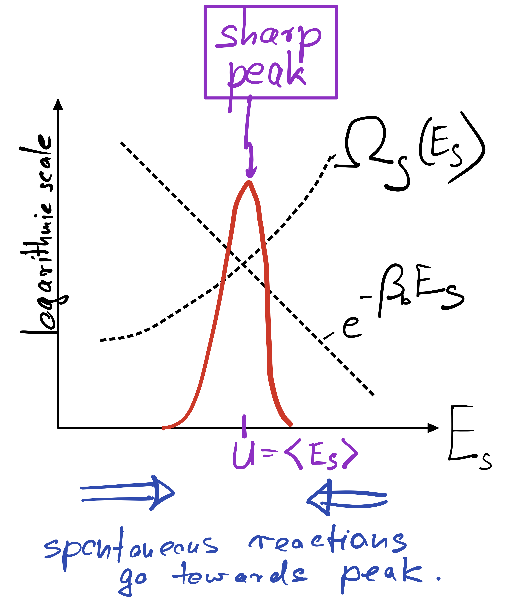

This page was generated from notebooks/L2/Intro_to_Stat_Phys_2_OH.ipynb.


Meaning of equilibrium#
Since the Boltzmann factor \(\exp(E_s/k_\mathrm{B}T_b)\) strongly suppresses energies that are much larger than the thermal energy \(k_\mathrm{B}T_b\), one would think that system states with energies larger than \(k_\mathrm{B}T_b\) almost never occur.
No! Even if any particular high energy state occurs with very low (exponentially small) probability, it can be that we typically observe one of them if there are sufficiently many of them. What matters is not only the Boltzmann factor but also how many states the system has with a given energy.
To mathematize this insight, we introduce the multiplicity \(\Omega_s(E_s)\) of the system at energy \(E_s\). With that we can say that the probability to observe the system in a state with energy \(E_s\) is given by how many states with that energy exist times the probablity to observe one of them, i.e.,
Usually there is a pronounced tradeoff between the two factors appearing in this equation. As the system energy increases, we gain a lot of new system states (\(\Omega_s\) rises exponentially or faster with \(E_s\)). But with increasing system energy, we also loose increasingly loose bath states, in fact at an exponential rate precisely given by the Boltzmann factor. The result is a pronounced peak of the product of both factors at a particular energy \(U\). This typical situation is depicted below.
In macroscopic systems, made up of O(Avogardo number) of particles, the peak becomes extremely sharp even in log space. In equilibrium, where our Basic Principle is satisfied, one therefore finds the system essentially deterministically at the energy \(U\) corresponding to the peak. That energy is called internal energy and can be found by maximizing the product of \(\Omega_s\) and the Boltzmann factor:
The internal energy can therefore be found graphically by following the trajectory of \(\ln \Omega_s\), which is convex (bending upward), until its slope just equal \(\beta_b\).
In complete analagy to our definition of the temperature of the bath, \(\beta_b\equiv \partial_E \ln\Omega_b\), we now introduce the temperature of the system via \(\beta_s\equiv \partial_E \ln\Omega_s\). The above equation says that, at the peak, both temperatures have to be the same,
To make sure that the peak is actually a peak, we have to demand that the second derivative of \(\ln P\) is negative or, equivalently, that \(\partial_E^2\ln \Omega_s<0\). This condition is automatically met if \(\ln \Omega_s\) is a concave function, as sketched in the figure above.
To summarize: At equilibrium, large systems coupled to a bath are almost deterministically found at a particular energy, the internal energy, where the temperature of bath and system are equal.
If a large system is intially out of equilibrium, say it has a larger or smaller energy than \(U\), it will gradually move towards the internal energy as a result of its internal dynamics towards higher probability (towards the peak). This is indicated by the blue arrow in my sketch above, indicating that spontaneous reactions always proceed towards the peak. Any reaction going away from the peak, towards lower probability, requires some kind of work and would not happen by itself (more precisely, would occur only with very low probability).
Partition function#
To fully determine the probability \(P(E_s)\) to observe our system at a given energy \(E_s\),
we still need to evaluate a normalization constant \(Z\),
.
In large systems, the integral is dominated by the value of the integrand at the peak energy \(U\),
We define the free energy \(A\) as
In the next section, we will see that the free energy attains a minmum at equilbrium. The above expression shows that \(A\) can be lowered either by lowering the energy or by increasing the entropy. The tradeoff between lowering energy (more states for the environment) and increasing entropy (more states for the system) is a recurrent theme in statistical physics.
Spontaneous Reactions#
A change in the macrostate of the system is said to happen spontaneously if we do not need to apply a (thermodynamic) driving force to induce the change. It is then clear that spontaneous reactions cannot increase the entropy of the world, \(0\leq\Delta S_{\text{tot}},\) which is one formulation fo the second law.
The total entropy change can be decomposed into entropy changes \(\Delta S_s\) and \(\Delta S_b\) of system and bath, respectively. For a large bath, we can Taylor expand the bath entropy change \(\Delta S_b=\Delta E_b/T_b\) in terms of the energy change \(\Delta E_b\) of the bath (just as we did to derive the Boltzmann factor). In terms of the the heat \(Q\equiv-\Delta E_b\) added to the system, we thus have
Thus, we obtain the Clausius inequality
where the greater sign applies to spontaneous processes and the equal sign applies to reversible processes, which are the only ones that occur in equilibrium.
Next, we invoke the first law of thermodynamics,
Here we have, for the first time, introduced work \(W\), which physcists define as work done by the system (Note, chemists define it as work done on the sytem). Imagine for instance, our system is a gas pressing against a piston. When the piston is allowed to move, the gas particles do \(p dV\) work for us (consider “us” as being outside “system” and “bath”).
Also a footnote about \(U\): In the context of spontaneous processes, we define it as an ensemble average of the energy of the system. That ensemble average can have a time dependence if the system starts out of equilibrium and is allowed to relax. Example: Consider a bottle of initially cold water that we through into a hot tub. The temperature of the bottle will increase over time until the temperature of the bottle matches the temperature of the hot tub. The energy \(E_s(t)\) of the bottle will generally increase towards the peak energy (from above), but the time series will show fluctuations: If we repeat the entire experiment, \(E_s(t)\) will look slightly different because the fluctuations are different. But the ensemble average \(U(t)\) over (infinitely) many realizations of the non-equilibrium process will be a deterministic time-dependent function.
Now, we consider isothermal reactions in which the temperature is held constant, i.e. \(\Delta T=0\). Assuming no work done, \(W=0\), the Clausius inequality implies
Note that the RHS is equal to the change \(\Delta A\) of the free energy (only in this isothermal case!). Thus, in a spontaneous process, the change in free energy is never positive,
If the system does work, the Clausius inequality gives us a bound on how much work we can get out of a process that involves change \(\Delta A<0\) in free energy, namely
Summary:
Spontaneous reactions reduce the free energy \(A\).
In equilibrium, the free energy is minimal.
The work done during a spontaeous process is less than the negative change in free energy
The work done during a reversible process is equal to the negative change in free energy
The above discussion also implies relationships between differentials for general reversible processes (not only isothermal ones):
or
Example: ATP consumption Most cellular processes are powered by
[ ]: